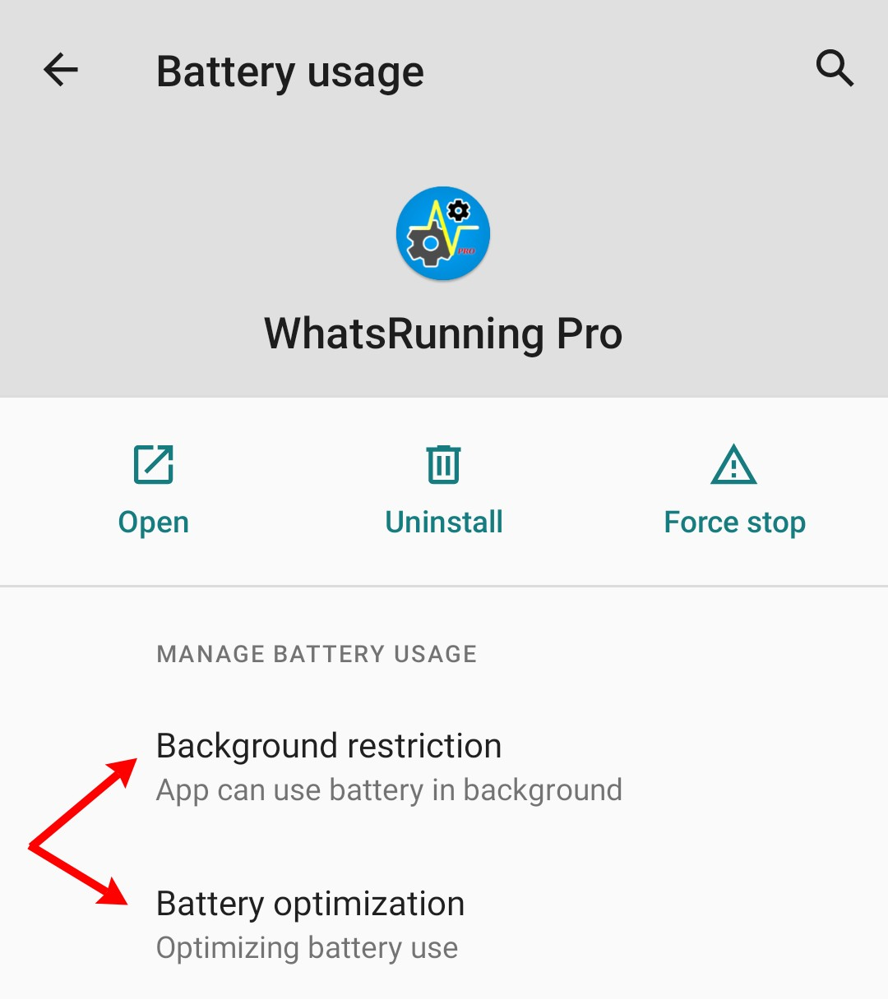
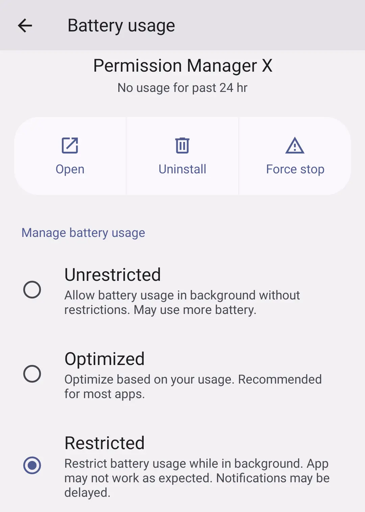
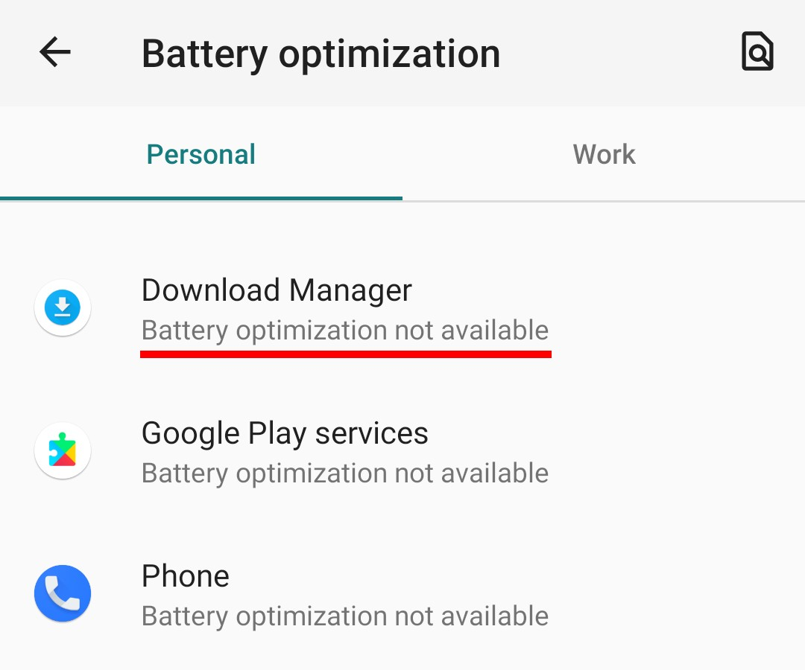
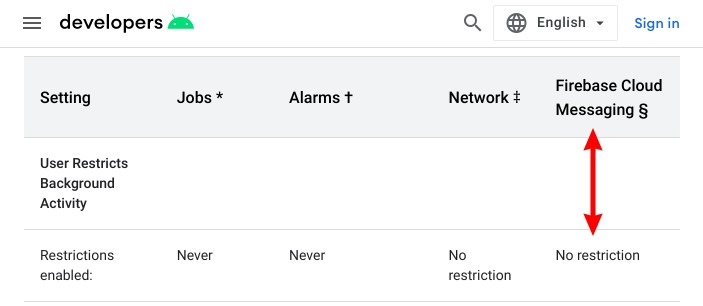

How to stop background apps on Android?
Must read:
Why you need to stop background apps?
It's important for two major reasons:
- You want to save device resources including CPU, battery and RAM. This increases device performance and gives a more pleasant user experience.
- You want to protect your privacy. Stopping background apps makes sure that they don't do nasty stuff, and they aren't calling home when you are sleeping. This gives peace of mind, among other things.
Restrict Background Execution
For most of the categories described in Why do apps run in background on Android?, apps won't run in background if the following AppOp permissions are not granted:
RUN_IN_BACKGROUNDRUN_ANY_IN_BACKGROUND: It's subject to the first i.e. ifRUN_IN_BACKGROUNDis set toAllow,RUN_ANY_IN_BACKGROUNDis always allowed.
Up to Android 11 the first one is labeled as Battery Optimization in device Settings. While the later is labeled as Background Restriction:
Since Android 12 both of the above AppOp permission are denied when "Restricted" option is selected:
There are two additional permissions which may help:
START_FOREGROUND: Permits an app to run Foreground Service.WAKE_LOCK: Permits an app to keep the device awake when you are not using it.
Also:
- Some custom ROMs add extra permissions to control background execution of apps. For instance you may find
BOOT_COMPLETEDAppOp permission on some Lineage based ROMs which controls an app's ability to receive broadcast when the device (re)starts.
You can use appops commandline tool to set these permissions. PermissionManagerX provides a convenient and elegant way to do the same:
Exceptions:
The system apps which are exempted from Battery Optimization (Doze)🔗 by your OEM (which always include the whole GMS stack if available) are highly unlikely to be affected by the above permission changes. You'll see such apps labeled with “Battery optimization not available” in Settings -> Apps & notifications -> Special apps access -> Battery optimization:
Another notable exception is Cloud Messaging. According to the table shown in Power Management, Cloud Messaging is not restricted even if background execution is not allowed:
But still the apps won't be able to start long running tasks in background when background permissions are denied.
Disable apps
If you find a system app purposelessly running in background, and you cannot uninstall it either, disabling the app is also an option. Use pm disable command or PermissionManagerX:
But note that Android operating system can enable an app if it is required by some other app. This is very common with apps from Google Mobile Suite (Play Services and company).
Disable components (root only)
Activities (the visible parts of an app), Services, Content Providers, and Broadcast Receivers are app components which can be disabled or blocked on rooted devices. This is useful when you don't want to completely disable or uninstall the app but still want to lock down its malicious or anti-privacy activities.
This can be done in two ways:
- Disabling an app component is possible using
pm disablecommand. But it's not reliable because the app itself is always free to enable its components. Also the app may crash, particularly if an Activity or Service is disabled. Most - but not all - of the communication between operating system and different components of apps occurs through Intents. So if we somehow succeed in stopping apps from receiving Intents, this will stop their background execution in some cases.
There is an undocumented hidden feature in Android named Intent Firewall (IFW) which exactly does this. You put filters under
/data/system/ifw/and Android checks them before passing Intents. In this way you can block any app component from starting, even from within the app, without crashing the app.
Both of these methods will be soon available in our upcoming app Ajza.
Note that this approach is dangerous particularly when applied to system and framework apps. You disable a component from some critical app, and the device gets into bootloop. So be cautious!
Cached apps
Generally you should not be worried about cached apps because they are in a dormant state. But starting with Android 11 there is an option in Developer Options named: “Suspend execution for cached apps” (introduced here). It uses “Freezer Control Group” to completely stop an app's activity when it's in cached state. You can enable this feature for additional protection.
Android Official documentation:
Background Execution Limits • Background processing • Background optimizations
Power Management Restrictions • Test power-related issues
Related: